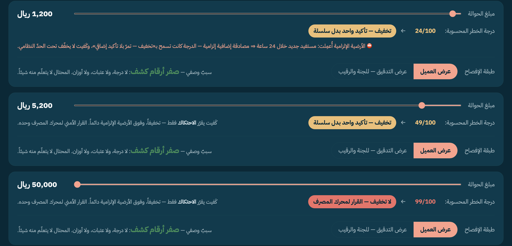
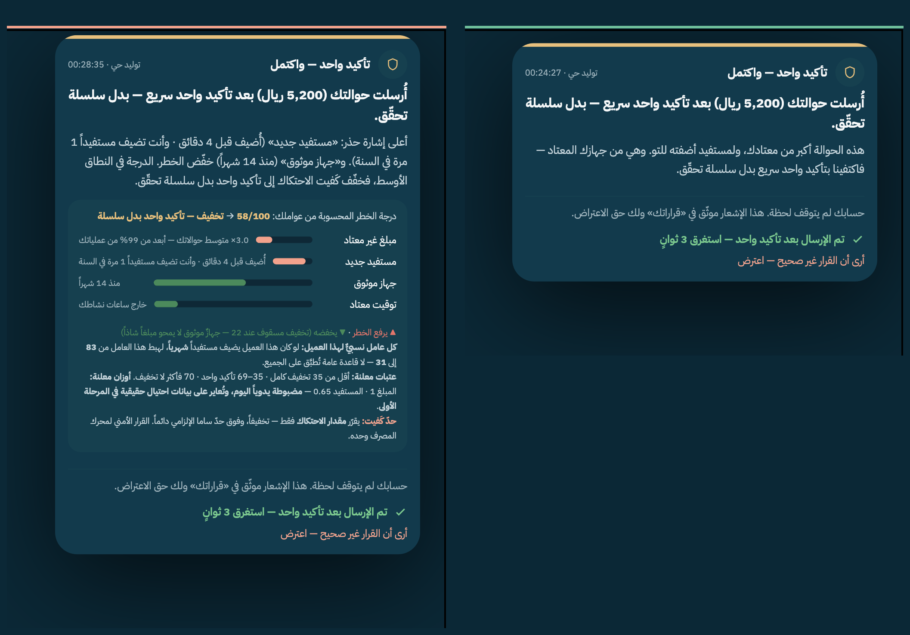
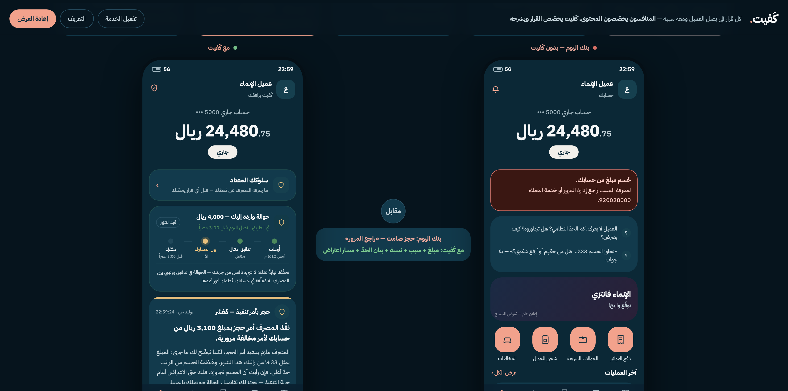

كَفيت يقول لك: ليش، ووش خطوتك — مع كل قرار يمسّ حسابك.
عميل مصرف الإنماء · @AskCFO · ♥ 29 متحقّق
المصرف يملك كل بياناته… وما قال له ليش. سؤاله يبقى معلّقاً.
المنافسون يخصّصون ما تراه. كَفيت يخصّص كيف يتصرّف المصرف معك — ثم يشرحه لك.
متوسط حوالاتك، وجهازك، وأوقاتك — من عملياتك أنت، لا من قاعدة على الجميع.
كل ما وضحت عاداتك، قلّت الخطوات المطلوبة منك — ويبقى فوق حدّ ساما دائماً. أما القرار الأمني فلنظام الحماية.
ماذا صار، وليش، ووش خطوتك — بكلام واضح ومعه حقّك تعترض. ويبقى محفوظاً في «قراراتك».
201 رداً حقيقياً لعملاء الإنماء متحقّق + مسح 14 جهة سعودية + مقارنة بـ13 بنكاً عالمياً + مؤشر القطاع المصرفي السعودي مشتق.
استُبعد الضجيج غير المتعلق بالخدمة المصرفية — من 139 إلى 81 صوت عميل حقيقي — ثم صُنّف كل ردّ يدوياً بثيمة واحدة.
من عمليات العميل نفسه: موقع المبلغ من متوسط حوالاته، وحداثة المستفيد، وعمر جهازه، والتوقيت — كل رقمٍ من بياناته، لا من قاعدة عامة.
النِّسب مؤشرات عيّنة (201 رداً) لا نتائج معمّمة — نقولها كذلك أمام اللجنة.
| الأهلي · ساب — رؤى إنفاق وتصنيف مصروفات | ✗ |
| الراجحي — عروض مخصّصة حسب إنفاقك | ✗ |
| مسح 14 جهة سعودية — الراجحي، الأهلي، الرياض، البلاد، وغيرها | ✗ للجميع متحقّق |
نقولها بصدق: بعضها يرسل سبب رفض عاماً — رصيد، أو حدّ يومي. لكن لا أحد يقول لك سبباً محسوباً من حسابك أنت، مع خطوتك التالية وحقّك تعترض. كَفيت يشرح التجميد والحجز والتأخير — لا الرفض وحده.



عملاء أوفى، ومكالمات دعم أقل — لأن العميل صار يفهم قرار حسابه بدل ما يتصل يسأل.
كل قرار يمسّ حسابه يوصله ومعه سببه وخطوته — ويبقى له حقّ الاعتراض بضغطة.
شفافية القرار وحقّ الاعتراض الموثّق — قيمة تنظيمية حقيقية، لا تجميل شكلي مشتق.
وكلفته صغيرة — فريق صغير × 3–4 أشهر لقناة واحدة، لا نظام جديد يُبنى من الصفر تقدير.
نربط قناةً واحدة بصلاحية قراءة فقط، فيصل أول عميل حقيقي سببَ قراره وخطوته.
نعدّ مكالمات هذه الفئة قبل الإشعار وبعده — فيصير عندنا رقم أثرٍ حقيقي، لا وعد على ورق.
تقرير أثرٍ موثّق يُعرض على الإدارة، ثم نتوسّع لبقية قنوات الإنماء ومنتجاته.
نطلب تجربةً موجّهة على قناة واحدة داخل الإنماء — نُثبت الرقم في 90 يوماً.